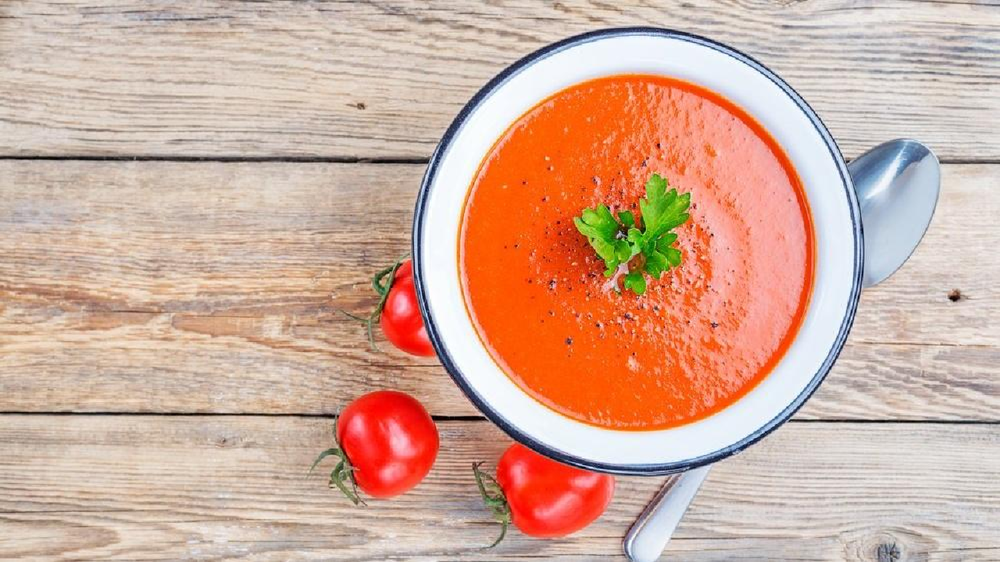
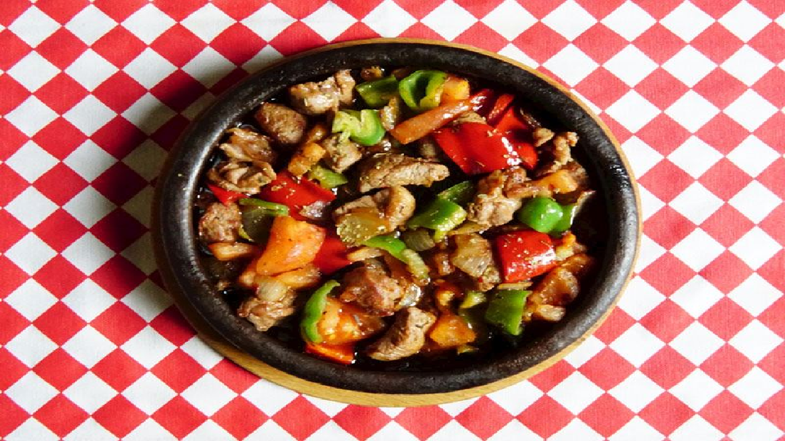
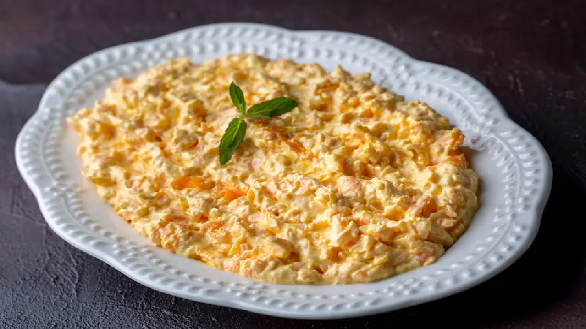
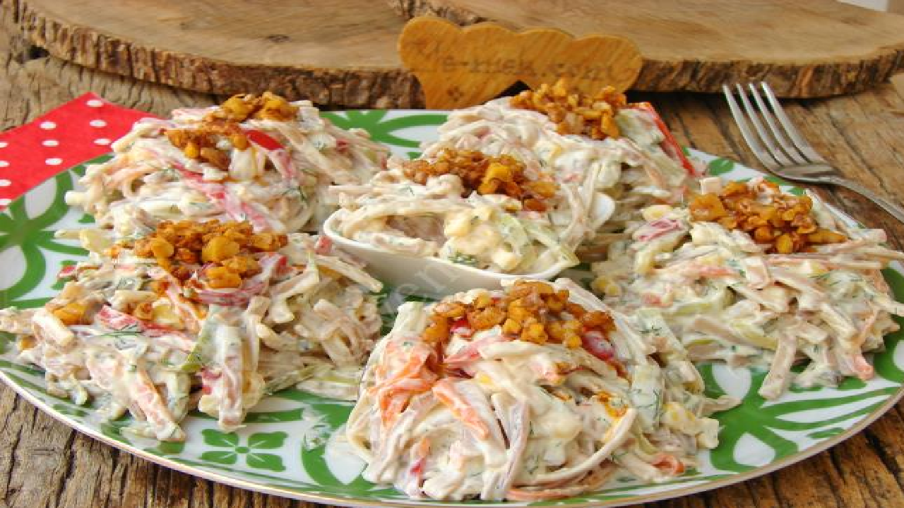

|  |
Kırmızı Biberli Domates Çorbası Tarifi2-3 adet kırmızı kapya biberi ve 4-5 adet domatesi fırında ya da ocakta közleyip kabuklarını soyun. 1 yemek kaşığı tereyağını bir tencerede eritip küçük doğranmış 1 adet soğanı pembeleşene kadar kavurun. Ardından doğranmış biber ve domatesleri ekleyip birkaç dakika daha çevirin, üzerine 1 yemek kaşığı un ilave edip unun kokusu çıkana kadar kavurmaya devam edin. 4 su bardağı sıcak su veya et suyu ekleyin, tuz ve karabiberle tatlandırın. Çorbayı 10-15 dakika kaynattıktan sonra blenderdan geçirerek pürüzsüz hale getirin. Üzerine rendelenmiş kaşar peyniri veya birkaç kaşık krema gezdirerek sıcak şekilde servis edin. |
|  |
Orman Kebabı Tarifi500 gram kuşbaşı doğranmış dana etini tencereye alıp suyunu salıp çekene kadar orta ateşte kavurun. Üzerine 1 yemek kaşığı tereyağı ve 1 adet yemeklik doğranmış soğanı ekleyip birkaç dakika daha kavurun. Ardından 1 yemek kaşığı domates salçası ekleyip kokusu çıkana kadar pişirin. Küp doğranmış 2-3 havuç, 2-3 patates ve 1 su bardağı haşlanmış bezelyeyi tencereye ilave edin. Tuz, karabiber, kekik gibi baharatlarla lezzet verip üzerini geçecek kadar sıcak su ekleyin. Tencerenin kapağını kapatıp et ve sebzeler yumuşayana kadar kısık ateşte pişirin. Yanında pirinç pilavıyla servis ederek nefis bir ana yemek elde edebilirsiniz. |
|  |
Havuç Tarator Tarifi3-4 adet havucu rendeleyip 2 yemek kaşığı zeytinyağında rengi dönene ve yumuşayana kadar kavurun. Havuçlar soğurken bir kasede 1 su bardağı yoğurt, 2 diş ezilmiş sarımsak ve damak tadınıza göre biraz tuzla güzelce karıştırın. Soğuyan havuçları bu yoğurtlu karışımın içine ekleyip iyice harmanlayın. Servis tabağına aldıktan sonra üzerini dövülmüş ceviz içi veya ince kıyılmış dereotuyla süsleyebilirsiniz. Soğuk olarak meze ya da garnitür şeklinde sunabilirsiniz. |
Kayseri YağlamasıHamur için 3 su bardağı un, 1 su bardağı ılık su, 1 tatlı kaşığı kuru maya ve biraz tuzu yoğurup üzerini örtüp yaklaşık 30-45 dakika mayalanmaya bırakın. Bu sırada iç harcı hazırlamak için 300 gram kıymayı tavada kavurup 1 adet doğranmış soğan ve 1 yemek kaşığı salçayla pişirin. Tuz, karabiber, pul biber gibi baharatları ekleyip 1 çay bardağı suyla biraz sulu bir harç elde edin. Mayalanan hamurdan ceviz büyüklüğünde bezeler alıp ince yuvarlak yufkalar açın ve tavada pişirin. Her yufkanın arasına hazırladığınız kıymalı harçtan sürerek üst üste dizin. Dilimleyip yanında sarımsaklı yoğurtla sıcak şekilde servis edin. |
|
|  |
Yoğurtlu Fit Erişte Salatası1 su bardağı tam buğday ya da kepekli erişteyi haşlayıp süzdükten sonra soğumaya bırakın. 1 su bardağı yoğurdu bir kasede 1 diş ezilmiş sarımsak, biraz tuz ve isteğe bağlı ince kıyılmış dereotuyla karıştırın. Haşlanıp soğuyan erişteyi yoğurtlu karışıma ekleyin, ardından 1 küçük kase haşlanmış mısır, rendelenmiş havuç ve doğranmış salatalık turşusunu da ilave edin. Tüm malzemeleri güzelce harmanlayıp servis tabağına alın. Üzerini dövülmüş ceviz ya da zeytinyağında çevrilmiş pul biberle süsleyip serin serin servis edebilirsiniz. Hafif ve doyurucu bir salata seçeneğidir. |